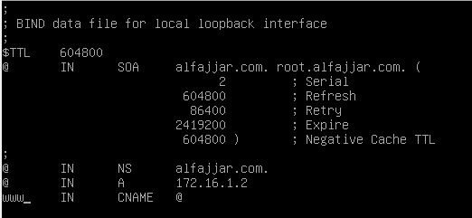
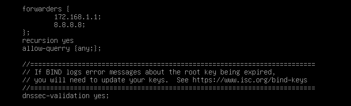

sudo cp db.127 db.ip
sudo nano db.ip

Secure Shell (SSH) merupakan protokol jaringan yang digunakan untuk remote jarak jauh dengan komunikasi data yang aman atau ter-enkripsi. SSH ini berjalan pada port TCP 22.
sudo apt update
sudo apt install openssh-server
sudo nano /etc/ssh/sshd_config
# lalu pada bagian PermitRootLogin hapus tanda # & ubah menjadi
PermitRootLogin yes
# hapus tanda # pada Port 22 & ubah menjadi
Port 2222
sudo systemctl restart sshd
sudo systemctl status sshd
Sebuah komputer server yang menjalankan layanan DNS. DNS (Domain name system) adalah suatu sistem yang bertugas untuk menerjemahkan nama domain menjadi IP address maupun sebaliknya dan juga mencari alamat host untuk memenuhi request dari client. DNS berjalan di port UDP 53.
Salah satu layanan DNS server di Linux adalah bind9, kita akan menambahkan domain: namaanda.com & www.namaanda.com
sudo apt update
sudo apt install bind9 dnsutils
cd /etc/bind
sudo nano named.conf.local
zone "alfajjar.com" {
type master;
file "/etc/bind/db.domain";
};
zone "1.16.172.in-addr.arpa" {
type master;
file "/etc/bind/db.ip";
};
sudo cp db.local db.domain
sudo nano db.domain

sudo cp db.127 db.ip
sudo nano db.ip
Meneruskan permintaan domain yang tidak tersedia di DNS server local ke DNS server external
sudo nano named.conf.options

sudo systemctl restart bind9
nslookup alfajjar.com
Server: 172.16.1.2
Address: 172.16.1.2#53
Name: alfajjar.com
Address: 172.16.1.2
Komputer yang menyimpan, memproses, dan mengirim file situs web ke browser web. Server web menggunakan protokol HTTP (Hypertext Transfer Protocol) untuk menanggapi permintaan pengguna web dari World Wide Web (www)
HTTP termasuk dalam lapisan ke-7 OSI & lapisan ke-5 TCP/IP
Jenis - jenis web servers:
- Apache servers
- Apache Tomcat (Java based)
- NGINX
- Lighttpd
- Microsoft IIS (internet information services)
Sebuah software yang digunakan untuk web server yang bersifat open source dan gratis. apache ini dapat berjalan diberbagai sistem operasi seperti Windows, Unix-like, OpenVMS, dll